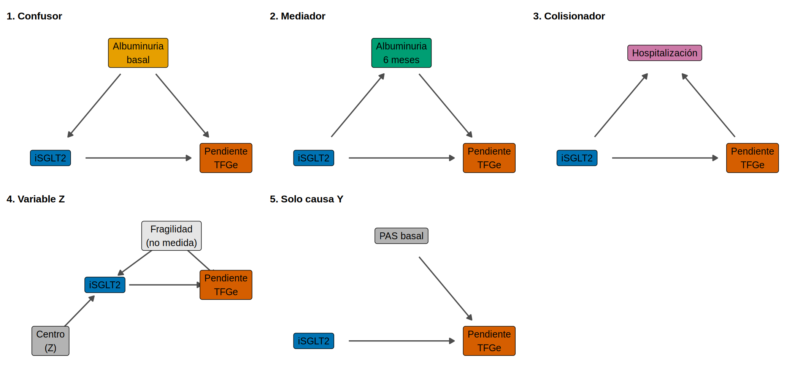
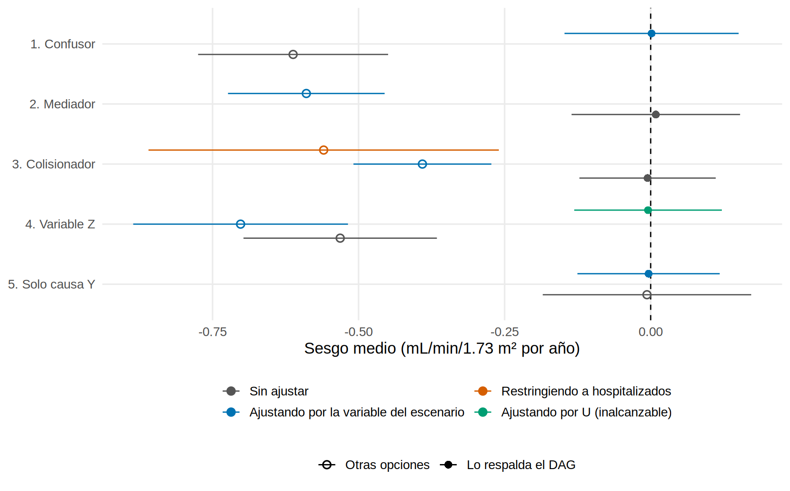

library(tidyverse)
source("R/funciones_epi.R") # dibujar_dag()
source("R/funciones_extra_a.R") # num(), pct()
source("R/funciones_dag_sim.R") # simular_dag(), comparar_ajustes(), replicar_ajustes(), cambio_en_estimacion()
theme_set(theme_minimal(base_size = 13) + theme(panel.grid.minor = element_blank()))
# Tabla compacta de resultados (redondeada) para mostrar
ver <- function(r) r |> select(ajuste, estimado, ic_inf, ic_sup, sesgo) |>
mutate(across(where(is.numeric), \(x) round(x, 2)))Simulaciones de DAG: ¿qué pasa si ajusto por…?
Nota🩺 Escenario
Tienes un registro de pacientes con ERC y quieres saber si los que toman un iSGLT2 pierden TFGe más despacio. En la base hay albuminuria basal, albuminuria a los 6 meses, hospitalizaciones y el centro donde se atienden. Un colega te dice “mete todo al modelo”; otro, “deja solo lo que cambie el coeficiente más de un 10 %”. Los dos pueden equivocarse. En el Capítulo 3.3 vimos las reglas de los DAG; aquí las ponemos a prueba con datos simulados en los que tú fijas el efecto verdadero y puedes ver cuánto se desvía cada decisión.
Lo que vamos a hacer
- Crear con
simular_dag()cinco escenarios (confusor, mediador, colisionador, variable Z y variable que solo causa \(Y\)), todos con efecto verdadero conocido. - Estimar con
comparar_ajustes()el efecto de \(X\) sobre \(Y\) sin ajustar y ajustando por cada variable, y medir el sesgo frente a la verdad. - Ver por qué el criterio del cambio en la estimación engaña, y cerrar con una figura-resumen y una regla práctica.
Paso 1. Simular con verdad conocida
En datos reales nunca sabes el efecto verdadero; en una simulación lo escribes tú. Todos los escenarios comparten la misma historia: \(X\) es iSGLT2 (0/1) e \(Y\) es la pendiente de TFGe (mL/min/1.73 m² por año, más alto es mejor). El efecto total verdadero del fármaco es +1 mL/min/año. simular_dag() genera los datos y guarda esa verdad como atributo.
d_demo <- simular_dag("confusor", n = 2000)
slice_head(d_demo, n = 3)# A tibble: 3 × 3
x y uacr_basal
<int> <dbl> <dbl>
1 0 -0.514 -1.14
2 0 1.57 -1.43
3 1 0.197 -1.49attr(d_demo, "verdad") # el efecto total verdadero[1] 1Los cinco escenarios, con el rol de cada variable, son estos (todo simulado):
pn <- function(tercero, rol, titulo, x3 = 2, y3 = 1.7, extra = NULL, aristas) {
nodos <- bind_rows(
tribble(~nombre, ~x, ~y, ~etiqueta, ~rol, "X", 1, 1, "iSGLT2", "exposicion", "Y", 3, 1, "Pendiente\nTFGe", "desenlace"),
tibble(nombre = "T", x = x3, y = y3, etiqueta = tercero, rol = rol), extra)
dibujar_dag(nodos, aristas, encoger = 0.2, tam_texto = 3.3, expandir = c(0.25, 0.3)) + labs(title = titulo) +
theme(legend.position = "none", plot.title = element_text(face = "bold", size = 10))
}
a <- \(...) tibble(de = c(...)[c(TRUE, FALSE)], a = c(...)[c(FALSE, TRUE)]) # a("X","Y", "T","X") -> aristas
patchwork::wrap_plots(
pn("Albuminuria\nbasal", "confusor", "1. Confusor", aristas = a("X","Y", "T","X", "T","Y")),
pn("Albuminuria\n6 meses", "mediador", "2. Mediador", aristas = a("X","Y", "X","T", "T","Y")),
pn("Hospitalización", "colisionador", "3. Colisionador", aristas = a("X","Y", "X","T", "Y","T")),
pn("Fragilidad\n(no medida)", "no medido", "4. Variable Z", y3 = 1.7, x3 = 2.1,
extra = tibble(nombre = "Z", x = 0.1, y = 0.2, etiqueta = "Centro\n(Z)", rol = "otro"),
aristas = a("X","Y", "T","X", "T","Y", "Z","X")),
pn("PAS basal", "otro", "5. Solo causa Y", aristas = a("X","Y", "T","Y")),
nrow = 2)
Paso 2. Confusor: ajustar acerca a la verdad
Escenario 1: los pacientes con más albuminuria basal reciben iSGLT2 con más frecuencia (es la indicación) y pierden TFGe más rápido. Es el confusor clásico. comparar_ajustes() estima el efecto sin ajustar y ajustando por cada variable medida:
set.seed(351)
r1 <- simular_dag("confusor", n = 2000) |> comparar_ajustes()
ver(r1)# A tibble: 2 × 5
ajuste estimado ic_inf ic_sup sesgo
<chr> <dbl> <dbl> <dbl> <dbl>
1 Sin ajustar 0.47 0.36 0.58 -0.53
2 Ajustando por uacr_basal 1.05 0.95 1.14 0.05Qué vemos. Sin ajustar, el estimado es 0.47: el fármaco parece mucho menos útil de lo que es (la verdad es 1), porque los tratados partían con peor pronóstico. Al ajustar por la albuminuria basal llegamos a 1.05, dentro de su IC 95 % (0.95 a 1.14). Es el caso en que el DAG manda ajustar.
Paso 3. Mediador: ajustar bloquea parte del efecto
Escenario 2: el fármaco reduce la albuminuria a los 6 meses y esa reducción mejora la pendiente. Fijamos que el 60 % del efecto pasa por la albuminuria (efecto indirecto) y el 40 % restante es directo: 0.4 de los 1.0 mL/min/año. Para aislar el mediador, aquí el tratamiento es aleatorizado.
set.seed(352)
d_med <- simular_dag("mediador", n = 2000)
r2 <- comparar_ajustes(d_med)
ver(r2)# A tibble: 2 × 5
ajuste estimado ic_inf ic_sup sesgo
<chr> <dbl> <dbl> <dbl> <dbl>
1 Sin ajustar 0.92 0.82 1.03 -0.08
2 Ajustando por uacr_6m 0.32 0.22 0.41 -0.68attr(d_med, "verdad_directo") # efecto directo verdadero[1] 0.4Qué vemos. Sin ajustar recuperamos el efecto total (0.92). Al ajustar por la albuminuria a los 6 meses el estimado cae a 0.32, cerca del efecto directo verdadero (0.40). No es un error de cálculo: contestas otra pregunta. Si quieres saber cuánto ayuda el fármaco en total (la pregunta habitual de una guía clínica), no ajustes por el mediador. Si quieres saber cuánto actúa por vías distintas de la albuminuria, sí, pero entonces necesitas además que no haya confusión entre albuminuria y pendiente (aquí no la hay por construcción; en la vida real, casi siempre la hay).
Paso 4. Colisionador: ajustar o restringir crea sesgo
Escenario 3: el tratamiento es aleatorizado, así que sin ajustar ya debería estar bien. Pero medimos la hospitalización, que es menos frecuente con el iSGLT2 y también con una buena pendiente: ambos la influyen. Veamos qué pasa si ajustas por ella o analizas solo a los hospitalizados (restringir también es condicionar):
set.seed(353)
d_col <- simular_dag("colisionador", n = 2000)
r3 <- comparar_ajustes(d_col, restringir = "hosp")
ver(r3)# A tibble: 3 × 5
ajuste estimado ic_inf ic_sup sesgo
<chr> <dbl> <dbl> <dbl> <dbl>
1 Sin ajustar 0.97 0.88 1.06 -0.03
2 Ajustando por hosp 0.59 0.5 0.68 -0.41
3 Restringido a hosp = 1 0.49 0.26 0.72 -0.51Qué vemos. El análisis sin ajustar da 0.97, sin sesgo apreciable. Ajustando por hospitalización baja a 0.59 y restringiendo a los 459 hospitalizados a 0.49, con un IC mucho más ancho. La razón: entre los hospitalizados, un paciente tratado está ahí a pesar del fármaco, lo que hace más probable que tenga mala pendiente; uno no tratado puede estar ahí simplemente por no haberlo recibido. Así, el tratamiento y la mala pendiente se asocian dentro de los hospitalizados aunque el fármaco no la cause. Hemos creado un sesgo que no existía.
Paso 5. Variable Z: ajustar puede amplificar el sesgo
Escenario 4: la fragilidad (\(U\)) no se mide; causa tanto el tratamiento (se receta menos a los frágiles) como la pendiente. Además hay una variable \(Z\) que solo influye en el tratamiento: la tendencia del centro a prescribir iSGLT2 (o la preferencia del nefrólogo). \(Z\) no es un confusor, porque no afecta a \(Y\) salvo a través de \(X\). ¿Se puede ajustar “por si acaso”?
set.seed(354)
d_z <- simular_dag("sesgo_z", n = 2000)
# candidatas incluye u_fragilidad solo para ver qué pasaría si pudiéramos medirla
r4 <- comparar_ajustes(d_z, candidatas = c("z_centro", "u_fragilidad"))
ver(r4)# A tibble: 4 × 5
ajuste estimado ic_inf ic_sup sesgo
<chr> <dbl> <dbl> <dbl> <dbl>
1 Sin ajustar 0.44 0.32 0.56 -0.56
2 Ajustando por z_centro 0.27 0.13 0.41 -0.73
3 Ajustando por u_fragilidad 0.99 0.9 1.09 -0.01
4 Ajustando por todas 0.96 0.85 1.07 -0.04Qué vemos. Sin ajustar, el sesgo ya existe (-0.56) porque falta \(U\). Al ajustar por \(Z\) el sesgo crece a -0.73: el estimado pasa de 0.44 a 0.27, más lejos de la verdad (1). Es la amplificación del sesgo (Z-bias): \(Z\) explica una parte de quién recibe el fármaco, y lo que queda por explicar depende más de \(U\), de modo que la confusión no medida pesa relativamente más. Solo si pudiéramos medir \(U\) llegaríamos a 0.99. Si \(U\) no existiera, \(Z\) no sesgaría, pero tampoco ayudaría: solo restaría algo de precisión.
Con el paquete simcausal (código no verificado en el entorno de pruebas del libro) el mismo escenario se escribe así; aquí no está instalado, por eso el libro usa simular_dag():
library(simcausal)
D <- DAG.empty() +
node("U", distr = "rnorm", mean = 0, sd = 1) +
node("Z", distr = "rnorm", mean = 0, sd = 1) +
node("X", distr = "rbern", prob = plogis(-0.2 + 1.5 * Z + 0.8 * U)) +
node("Y", distr = "rnorm", mean = -2 + 1 * X - 1 * U, sd = 1)
Dset <- set.DAG(D)
datos_sc <- sim(DAG = Dset, n = 2000, rndseed = 354)
coef(lm(Y ~ X, datos_sc))["X"] # sin ajustar
coef(lm(Y ~ X + Z, datos_sc))["X"] # ajustando por ZPaso 6. Variable que solo causa \(Y\): no sesga, mejora la precisión
Escenario 5: tratamiento aleatorizado y una covariable basal (la PAS) que predice la pendiente pero no el tratamiento. No es confusor. ¿Qué gana ajustar? Una simulación no basta, porque un solo dataset mezcla azar y efecto; repetimos 200 veces:
set.seed(355)
r5 <- replicar_ajustes("solo_y", reps = 200, n = 1000)
r5 |> select(ajuste, estimado, sesgo, ee_empirico) |> mutate(across(where(is.numeric), \(x) round(x, 3)))# A tibble: 2 × 4
ajuste estimado sesgo ee_empirico
<chr> <dbl> <dbl> <dbl>
1 Sin ajustar 1.01 0.008 0.088
2 Ajustando por pas_basal 1.01 0.008 0.064Qué vemos. Con o sin ajuste el estimado medio es prácticamente el mismo (1.008 sin ajustar y 1.008 ajustando; la verdad es 1): no hay sesgo en ninguno. Lo que cambia es la variabilidad entre muestras: la desviación estándar de las estimaciones baja de 0.088 a 0.064, es decir, intervalos 27 % más estrechos. Incluir una variable que solo predice el desenlace es gratis y útil.
Paso 7. Por qué engaña el “cambio en la estimación”
El criterio dice: añade la variable al modelo; si el coeficiente del tratamiento cambia más de un 10 %, consérvala. Suena razonable y se usa mucho. Probémoslo en las variables de los cinco escenarios (muestras grandes, para que el azar no decida):
set.seed(357)
casos <- tribble(
~tipo, ~variable, ~papel, ~dag_dice,
"confusor", "uacr_basal", "Confusor", "incluir",
"mediador", "uacr_6m", "Mediador", "no incluir (efecto total)",
"colisionador", "hosp", "Colisionador", "no incluir",
"sesgo_z", "z_centro", "Z (solo causa X)", "no incluir",
"solo_y", "pas_basal", "Solo causa Y", "opcional (precisión)"
)
tabla_cie <- casos |>
mutate(res = map2(tipo, variable, \(t, v) cambio_en_estimacion(simular_dag(t, n = 5000), v))) |>
unnest(res, names_sep = "_") |>
transmute(papel, variable, cambio = round(100 * res_cambio_rel), regla_cie = res_regla, dag_dice)
tabla_cie# A tibble: 5 × 5
papel variable cambio regla_cie dag_dice
<chr> <chr> <dbl> <chr> <chr>
1 Confusor uacr_basal 166 incluir incluir
2 Mediador uacr_6m -56 incluir no incluir (efecto total)
3 Colisionador hosp -38 incluir no incluir
4 Z (solo causa X) z_centro -41 incluir no incluir
5 Solo causa Y pas_basal -1 descartar opcional (precisión) Qué vemos. El criterio manda incluir la variable en 4 de los 5 casos, pero el DAG solo respalda uno con claridad. Incluye correctamente al confusor (cambio de 166 %, enorme porque el estimado crudo está lejos de la verdad). Pero también “elige” el mediador (-56 %), el colisionador (-38 %) y la variable Z (-41 %), y en los tres casos incluirla empeora el estimado del efecto total. El criterio solo detecta que el coeficiente se mueve; no sabe si se mueve hacia la verdad o lejos de ella. Un cambio grande es consistente con un confusor, pero también con un mediador, un colisionador o una Z.
Con desenlace binario hay una trampa extra: la no colapsabilidad del odds ratio. Una variable que predice el desenlace pero no es confusora (la PAS en un ensayo aleatorizado) cambia el OR del tratamiento al incluirla, aunque no haya confusión:
set.seed(358)
d_bin <- simular_dag("solo_y", n = 100000, binario = TRUE) # verdad: OR condicional = 0.70
or_bin <- cambio_en_estimacion(d_bin, "pas_basal")
or_bin |> mutate(or_sin = exp(sin_v), or_con = exp(con_v), cambio_rel = round(cambio_rel, 2)) |>
select(variable, or_sin, or_con, cambio_rel, regla)# A tibble: 1 × 5
variable or_sin or_con cambio_rel regla
<chr> <dbl> <dbl> <dbl> <chr>
1 pas_basal 0.769 0.707 -0.32 incluirQué vemos. El OR sin PAS es 0.77 y con PAS, 0.71 (la verdad condicional es 0.70). El log-OR cambia un 32 % y la regla dice “incluir”, aunque no hay confusión: son dos OR distintos (marginal y condicional) y ambos son correctos para su pregunta. El cambio en la estimación sirve, como mucho, como diagnóstico (¿cuánto depende mi resultado de esta variable?), nunca como regla para decidir qué entra.
Paso 8. La figura-resumen: sesgo por escenario y conjunto de ajuste
Un solo dataset puede engañar por azar. Repetimos cada escenario 200 veces (muestras de 1000 pacientes) y calculamos el sesgo medio, es decir, el estimado menos la verdad (1), con el rango donde caen el 95 % de las estimaciones:
set.seed(359)
resumen <- bind_rows(
replicar_ajustes("confusor", reps = 200, n = 1000) |> mutate(escenario = "1. Confusor"),
replicar_ajustes("mediador", reps = 200, n = 1000) |> mutate(escenario = "2. Mediador"),
replicar_ajustes("colisionador", reps = 200, n = 1000, restringir = "hosp") |> mutate(escenario = "3. Colisionador"),
replicar_ajustes("sesgo_z", reps = 200, n = 1000, candidatas = c("z_centro", "u_fragilidad")) |>
filter(conjunto != "z_centro+u_fragilidad") |> mutate(escenario = "4. Variable Z"),
replicar_ajustes("solo_y", reps = 200, n = 1000) |> mutate(escenario = "5. Solo causa Y")
) |>
mutate(
como = case_when(conjunto == "ninguno" ~ "Sin ajustar",
startsWith(conjunto, "restringido") ~ "Restringiendo a hospitalizados",
conjunto == "u_fragilidad" ~ "Ajustando por U (inalcanzable)",
TRUE ~ "Ajustando por la variable del escenario"),
# la opción que respalda el DAG en cada escenario
dag = case_when(escenario %in% c("1. Confusor", "5. Solo causa Y") ~ como == "Ajustando por la variable del escenario",
escenario %in% c("2. Mediador", "3. Colisionador") ~ como == "Sin ajustar",
TRUE ~ como == "Ajustando por U (inalcanzable)"))resumen |>
mutate(escenario = fct_rev(escenario),
como = factor(como, levels = c("Sin ajustar", "Ajustando por la variable del escenario",
"Restringiendo a hospitalizados", "Ajustando por U (inalcanzable)"))) |>
ggplot(aes(sesgo, escenario, color = como, shape = dag)) +
geom_vline(xintercept = 0, linetype = "dashed") +
geom_pointrange(aes(xmin = sesgo - 1.96 * ee_empirico, xmax = sesgo + 1.96 * ee_empirico),
position = position_dodge(width = 0.7), size = 0.6, stroke = 0.9) +
scale_shape_manual(values = c(`TRUE` = 16, `FALSE` = 1), labels = c(`TRUE` = "Lo respalda el DAG", `FALSE` = "Otras opciones")) +
scale_color_manual(values = c("#555555", "#0072B2", "#D55E00", "#009E73")) +
guides(color = guide_legend(nrow = 2, order = 1), shape = guide_legend(nrow = 1, order = 2)) +
labs(x = "Sesgo medio (mL/min/1.73 m² por año)", y = NULL, color = NULL, shape = NULL) +
theme(legend.position = "bottom", legend.box = "vertical")
Qué vemos. El ajuste correcto lleva el sesgo cerca de 0 en el confusor (de -0.61 a 0.00). En el mediador, ajustar introduce un sesgo de -0.59 respecto del efecto total (el estimado coincide con el directo). En el colisionador, ajustar da -0.39 y restringir -0.56, aunque sin ajustar el sesgo es -0.01. En la variable Z, ajustar empeora el sesgo de -0.53 a -0.70. Y en la variable que solo causa \(Y\), el sesgo es prácticamente nulo con ajuste (-0.004) y sin él (-0.006): se gana precisión, no validez.
Paso 9. Regla práctica: qué incluir en el modelo
Resumen de las simulaciones para estimar el efecto total de una exposición (siempre según tu DAG, no según la correlación):
| Tipo de variable | Cómo la reconoces | ¿La incluyo? | Qué pasa si me equivoco |
|---|---|---|---|
| Confusor | Causa la exposición y el desenlace; medida antes de la exposición | Sí | Sin ella, el efecto se distorsiona (aquí, se anulaba) |
| Mediador | La exposición la causa y ella causa el desenlace | No (para el efecto total) | Estimas el efecto directo, no el total |
| Colisionador (o restringir por él) | La causan la exposición y el desenlace | No | Se crea una asociación que no existe |
| Z (solo causa la exposición) | Predice quién recibe el tratamiento, pero no afecta a \(Y\) | No | Con confusión no medida, amplifica el sesgo |
| Solo causa \(Y\) | Predice el desenlace, no el tratamiento | Sí, opcional | Nada grave; mejora la precisión |
| Medida después de la exposición | Se mide durante el seguimiento | Cuidado (mediador o colisionador probable) | Ver filas anteriores |
Advertencia⚠️ Una simulación demuestra la lógica, no tu DAG
Estos resultados valen si el DAG es cierto; con datos reales el DAG es una hipótesis. Si dudas entre dos DAG (¿la albuminuria a los 6 meses es mediador o también confusora?), haz el análisis con ambos y comprueba cuánto cambia la conclusión. Y recuerda que la selección automática de variables (paso a paso, cambio en la estimación, valor p) comparte el defecto de fondo: mira los datos, pero no sabe qué causa qué.
Importante🎯 En resumen
- Con verdad conocida se ve que ajustar no es “siempre mejor”: depende del rol de la variable en el DAG.
- Confusor: ajusta. Mediador y colisionador (incluido restringir): no, si quieres el efecto total.
- Z (solo causa la exposición): no ajustes; con confusión no medida amplifica el sesgo.
- Una variable que solo causa \(Y\) no sesga y mejora la precisión.
- El cambio en la estimación no distingue un confusor de un mediador, un colisionador o una Z; úsalo como diagnóstico, no como regla.
Ejercicio
- Con
simular_dag("sesgo_z")ycomparar_ajustes(), estima el efecto ajustando porz_centro. Sin ejecutarlo antes, predice si el estimado quedará por encima o por debajo del estimado sin ajustar, y comprueba tu predicción. - Ejecuta
replicar_ajustes("mediador", reps = 100, prop_directo = 0.8). ¿Qué esperas que ocurra con la diferencia entre ajustar y no ajustar? Explícalo con el DAG. - Dibuja el DAG de una pregunta de tu servicio (por ejemplo, ¿la diálisis peritoneal domiciliaria reduce hospitalizaciones?) con al menos un confusor, un mediador y un colisionador, y decide qué incluirías en el modelo.
Referencias
- Karim ME. Advanced Epidemiological Methods (EpiMethods). https://ehsanx.github.io/EpiMethods/ (capítulos sobre mediador, colisionador, sesgo Z y cambio en la estimación; este capítulo adapta sus ideas con código propio).
- Hernán MA, Robins JM. Causal Inference: What If. Chapman & Hall/CRC; 2020.
- Cinelli C, Forney A, Pearl J. A crash course in good and bad controls. Sociol Methods Res. 2024;53(3):1071-1104.
- Pearl J. Invited commentary: understanding bias amplification. Am J Epidemiol. 2011;174(11):1223-1227.
- Cole SR, Platt RW, Schisterman EF, et al. Illustrating bias due to conditioning on a collider. Int J Epidemiol. 2010;39(2):417-420.
- Greenland S. Modeling and variable selection in epidemiologic analysis. Am J Public Health. 1989;79(3):340-349.
- Maldonado G, Greenland S. Simulation study of confounder-selection strategies. Am J Epidemiol. 1993;138(11):923-936.
- Lectura recomendada por el autor: Barrett M, D’Agostino McGowan L, Gerke T. Causal Inference in R. https://www.r-causal.org/
Nota editorial
- Datos simulados con efecto verdadero fijado por el autor. Sección redactada con asistencia de IA (Claude) y adaptada, con código propio, de las ideas de EpiMethods (licencia CC0).